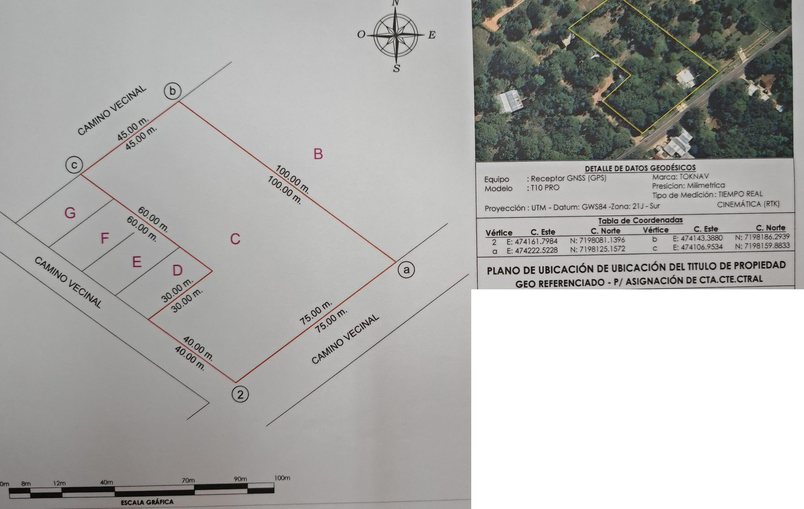
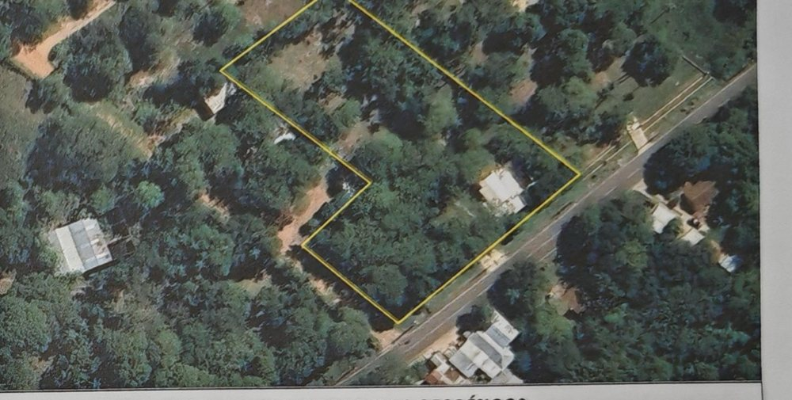

Cómo se construyó esta maqueta
La maqueta une dos documentos: el plano de fraccionamiento de la arquitecta (calle, lotes, portón, casa modelo) y el plano de ubicación georreferenciado del título, medido con GNSS en tiempo real por un ingeniero en ciencias geográficas matriculado el 5 de junio de 2026. El límite del predio es el medido, al centímetro; el trazado interior es el de la arquitecta, sin redibujar nada a ojo.
1. El límite del predio: mensura georreferenciada
El plano de mensura, firmado por un ingeniero en ciencias geográficas matriculado (plano 1/1, escala 1:1.000, para asignación de cuenta corriente catastral), fija cuatro vértices con coordenadas UTM y confirma las seis cotas del título. Los dos vértices del quiebre, que el plano no tabula, se deducen de la geometría: el lado de 40 m y el de 60 m son paralelos al lindero de 100 m, y el quiebre de 30 m es paralelo al frente. Con esa construcción el lado deducido mide exactamente 60,00 m y la superficie resultante es 5.468,82 m², contra 5.468,8157 m² del título: una diferencia total de 45 cm² sobre todo el predio.
- Inmueble
- Fracción C
- Ubicación
- Pirayu'i · Distrito de San Bernardino · Departamento de Cordillera
- Superficie
- 5.468 m² 8.157 cm² (título)
- Sistema
- Proyección UTM · Datum WGS84 · Zona 21 J Sur
- Medición
- Receptor GNSS (GPS) TOKNAV T10 PRO · precisión milimétrica según el rótulo del plano · tiempo real cinemática (RTK)
- Profesional
- Un ingeniero en ciencias geográficas matriculado (registro MOPC y CSJ)
- Fecha
- 05-06-2026
- Centro del predio
- 25°19′59,5″ S · 57°15′24,2″ O (UTM E 474.163,3 · N 7.198.134,0)
- Orientación
- El frente (vértice 2 → a) tiene azimut de cuadrícula 54,06° (UTM 21S; el norte verdadero difiere unos 0,1° por la convergencia de meridianos). En la maqueta ese norte se muestra con la rosa de los vientos junto a la ruta y rige la posición del sol.
| Vértice | Este (m) | Norte (m) | Origen |
|---|---|---|---|
| 2 (esquina frente / camino vecinal) | 474.161,7984 | 7.198.081,1396 | medido |
| a (esquina frente / fracción B) | 474.222,5228 | 7.198.125,1572 | medido |
| b (fondo / fracción B) | 474.143,3880 | 7.198.186,2939 | medido |
| c (fondo / lindero oeste) | 474.106,9534 | 7.198.159,8833 | medido |
| quiebre 1 (fin del lado de 40 m) | 474.130,144 | 7.198.105,594 | deducido |
| quiebre 2 (fin del lado de 30 m) | 474.154,434 | 7.198.123,201 | deducido |


2. Del plano de la arquitecta al modelo
El plano de la arquitecta se leyó como dibujo vectorial, no como imagen. Cada línea se convirtió a metros con una única transformación uniforme (misma escala en los dos ejes), de modo que las proporciones del dibujo se conservan. Luego el contorno del predio se reemplazó por el polígono medido y la calle, las veredas y las líneas divisorias de lotes se mantuvieron en su posición exacta en metros. El dibujo original se conserva como capa base (visible en la vista Plano), ajustado al límite medido con una deformación suave que solo afecta al dibujo, no a la geometría. En esa capa se omiten los rótulos de texto exteriores del dibujo (el nombre de la ruta bajo el frente y la leyenda del lindero este), que quedaban encimados con los de la maqueta.
| Lado | Título y mensura | Dibujo de la arquitecta | Diferencia del dibujo |
|---|---|---|---|
| Frente sobre la ruta (2 → a) | 75,00 m | 73,59 m | −1,41 m |
| Camino vecinal, tramo sur (2 → quiebre 1) | 40,00 m | 43,85 m | +3,85 m |
| Quiebre hacia el este | 30,00 m | 30,29 m | +0,29 m |
| Lindero oeste, tramo norte (quiebre 2 → c) | 60,00 m | 55,72 m | −4,28 m |
| Fondo (c → b) | 45,00 m | 43,44 m | −1,56 m |
| Lindero este, fracción B (b → a) | 100,00 m | 99,88 m | −0,12 m |
3. Superficies de los lotes
Por indicación de la arquitecta, la superficie de cada lote que muestra la maqueta es la calculada sobre la mensura georreferenciada: la que queda al recortar las líneas divisorias de su plano sobre el límite medido del predio. La columna “plano de fraccionamiento” recoge la tabla original de la arquitecta, dibujada antes de la mensura, como referencia.
| Lote | Plano de fraccionamiento | Sobre la mensura (maqueta) | Frente a la calle |
|---|---|---|---|
| 1 (casa modelo) | 723,03 m² | 726,28 m² | ≈ 21,8 m |
| 2 | 539,00 m² | 549,20 m² | ≈ 17,5 m |
| 3 | 618,44 m² | 633,90 m² | ≈ 19,9 m |
| 4 | 400,00 m² | 399,46 m² | ≈ 23,6 m |
| 5 | 380,41 m² | 419,90 m² | ≈ 23,7 m |
| 6 | 511,84 m² | 497,34 m² | ≈ 23,3 m |
| 7 | 500,00 m² | 491,55 m² | ≈ 15,8 m |
La suma de los siete lotes sobre la mensura es 3.717,63 m² (3.672,72 m² en el plano de fraccionamiento); el resto del predio son la calle con sus veredas, el área verde del frente, la franja de tacuaras del fondo y el portón.
4. Lo que la maqueta no inventa
La calle empedrada, el ancho de veredas, el portón con casilla de portero, la franja de tacuaras del fondo, el área verde del frente, la casa modelo del lote 1 y su pileta están donde el plano de la arquitecta los dibuja. La casa modelo se muestra de una sola planta, con losa plana, cochera abierta y galería de acceso, como en el render de la arquitecta; sus fachadas, aberturas y materiales son una interpretación ilustrativa de ese render, no un proyecto ejecutivo. Los dos árboles existentes que el plano marca dentro de la calzada se conservan en su lugar, con una isleta con cordón alrededor, como dibuja la arquitecta. El volumen de la cochera de la casa modelo se recortó 1,1 m para no cruzar la divisoria con el lote 2, según la divisoria del plano de la arquitecta. Los demás árboles, cercos y luminarias son ambientación: se colocaron con criterio paisajístico (lapachos rosados sobre la calle, palmeras en el acceso, cercos vivos entre lotes) y no forman parte del plano.
La pendiente del terreno es ilustrativa (una subida suave hacia el fondo); no hay relevamiento altimétrico. La luz de la maqueta sigue el norte medido: al mediodía el sol está al norte y las sombras caen hacia la ruta, como en el lugar.
En las vistas Maqueta y Plano el predio se muestra como maqueta de mesa sobre una página marfil (medianoche de noche), con la ruta y el camino vecinal como borde de la losa; el entorno completo aparece en las vistas Ruta, Lote y Dron.
5. Cómo se usa
Pasa el mouse por un lote para resaltarlo y haz clic para abrir su ficha. Con el teclado: los números 1 a 7 seleccionan un lote, las flechas pasan al siguiente y Escape cierra. V cambia de vista (maqueta, plano, ruta, lote, dron), L cambia la luz (día, atardecer, noche), T cambia la vegetación (parque o bosque), C muestra las cotas, P alterna el modo plano, R vuelve al inicio y ? abre la ayuda. En el celular: arrastrar gira, dos dedos acercan y desplazan, tocar un lote lo selecciona.